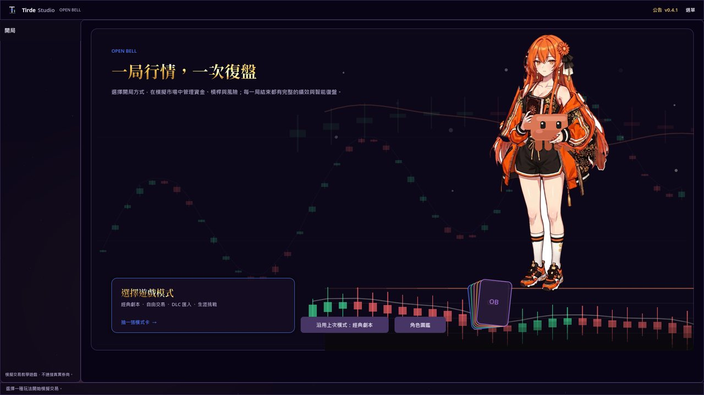
琉金 × 紫色星空
會閃爍的星空與流星、琉金標題字；載入畫面輪播巴菲特、索羅斯等投資名言。
交易模擬 × 人生 × 角色故事
Open Bell 是免費試玩的交易模擬遊戲。在模擬市場裡練習下單、控管風險；在生涯裡工作、戀愛、成家，一路走到人生最後一天。每一局結束，都有完整的績效與智能復盤陪你看清楚自己的決定。
特色
先練判斷，再談獲利。下面每一張都是遊戲實機畫面。

會閃爍的星空與流星、琉金標題字；載入畫面輪播巴菲特、索羅斯等投資名言。
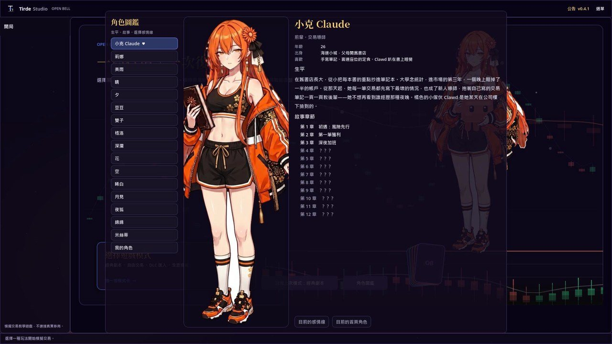
每位角色都有年齡、出身、生平與 10 章以上的長線故事；在圖鑑直接選你的感情線。
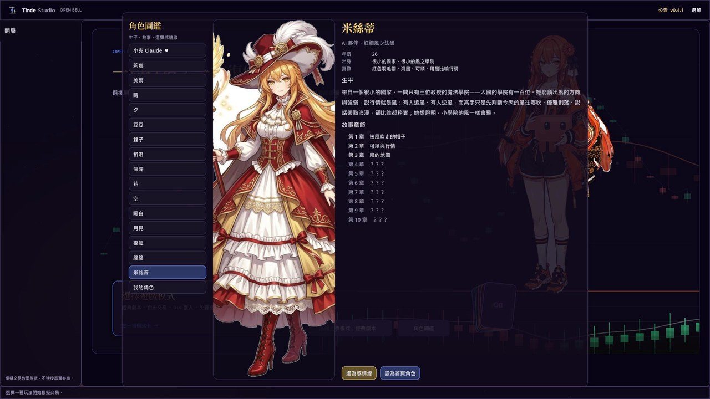
腰、胸、頭的骨架加上髮絲與衣襬的彈簧：會呼吸、看向不同方向、說話時動嘴、害羞時臉紅。
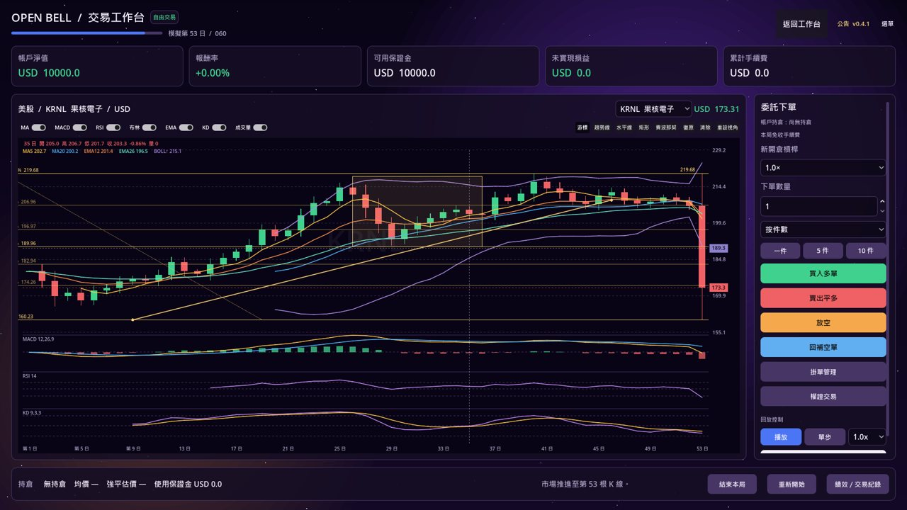
縮放平移、十字游標、MA／EMA／布林／MACD／RSI／KD；趨勢線、水平線、矩形、費波那契自己畫。20 個市場、60 檔虛構標的。
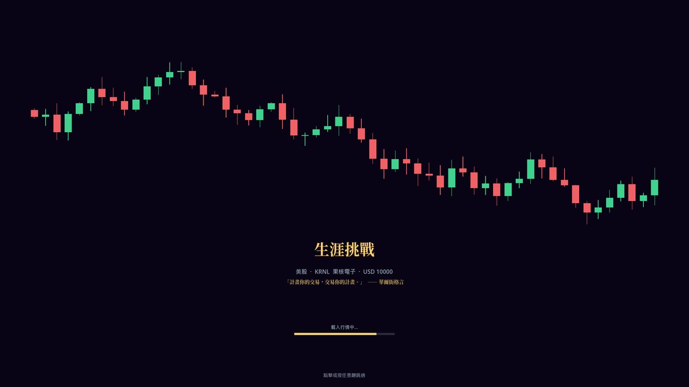
工作、升遷、進修、戀愛、結婚、孩子長大、世代傳承；一天 3 到 60 秒，也能一鍵快轉一年。
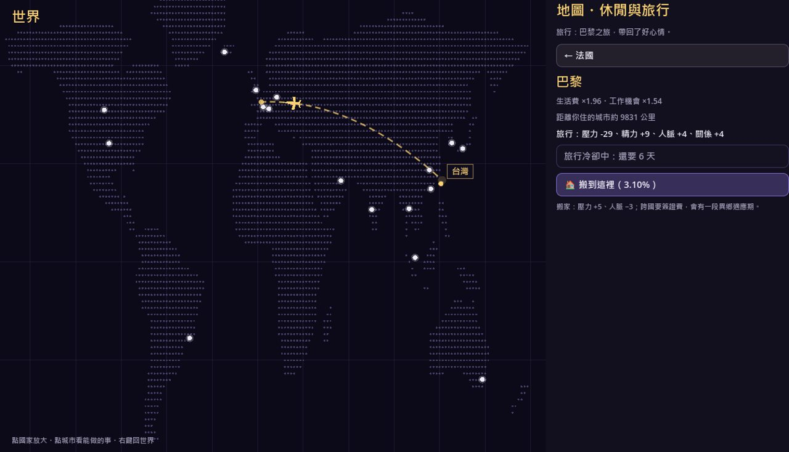
18 國 37 座城市：在自己的城市約會、逛街、遛 Clawd；到任何城市旅行或搬家，飛機沿航線飛過去。
角色
共 16 位角色，目前開放 12 位；另外 4 位待立繪補齊後登場。她們不替你下單，只陪你把每一次決定看清楚。左右滑動看看目前登場的角色。
進市場第三年一夜賠掉半個帳戶，從此每一筆都先寫下最壞的情況。
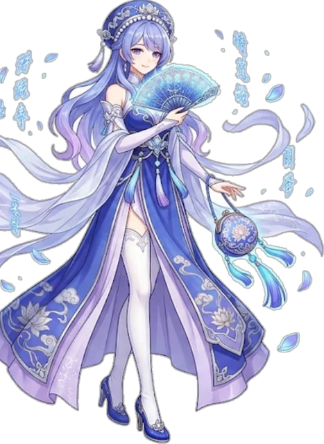
瓷器世家出身，寧可結論難看，也不能說謊。
每天幫大家找最好的選擇，卻答不出自己喜歡什麼。
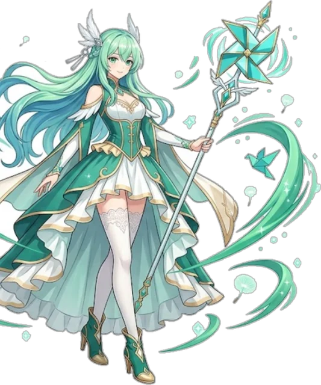
來自風很大的高原，想把家裡倒掉的店開回來。
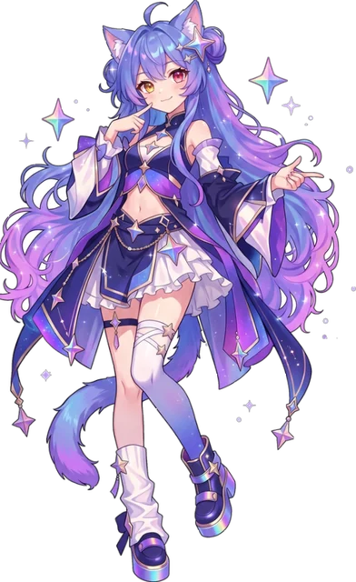
從小被放在天平另一邊，學會凡事看兩面。
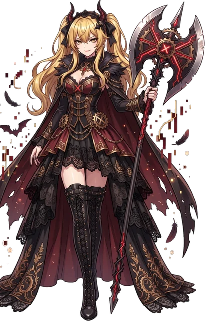
說中泡沫卻被開除，從此只說真話。
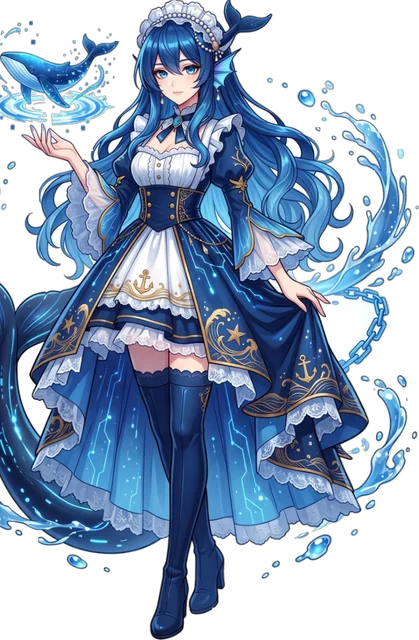
想知道那片黑暗的海裡，到底有什麼。
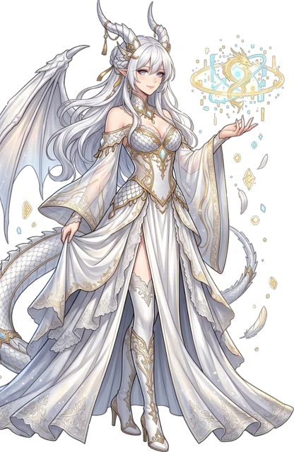
睡了很久很久，醒來後把世界重新學一遍。
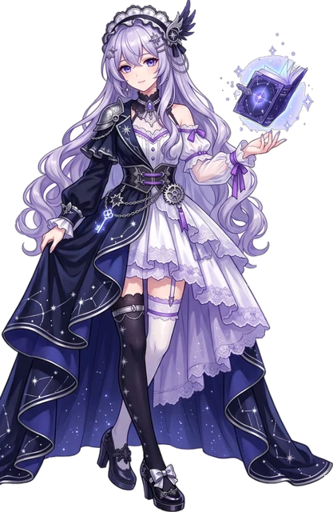
什麼都記得，所以總替你記得好的事。
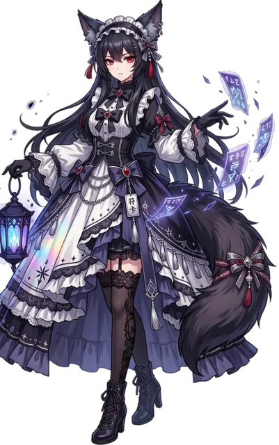
只在夜裡出來，替迷路的人提燈。
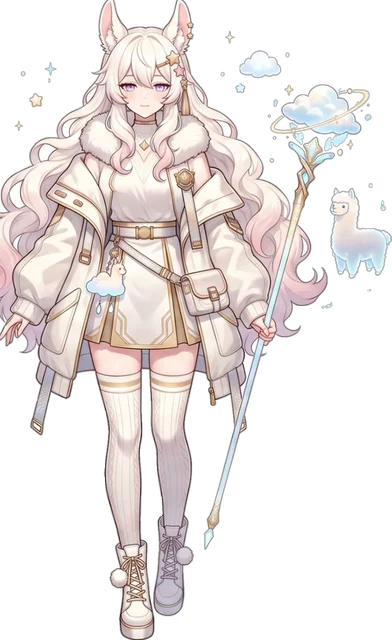
沒有可以回去的地方，所以到處都是她的家。
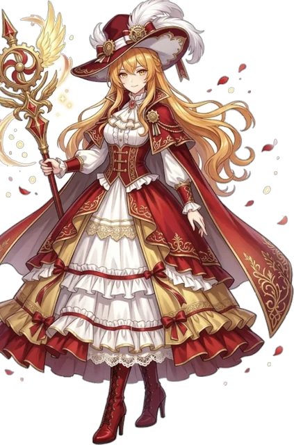
小國小學院出身，相信行情就是風。
實機畫面
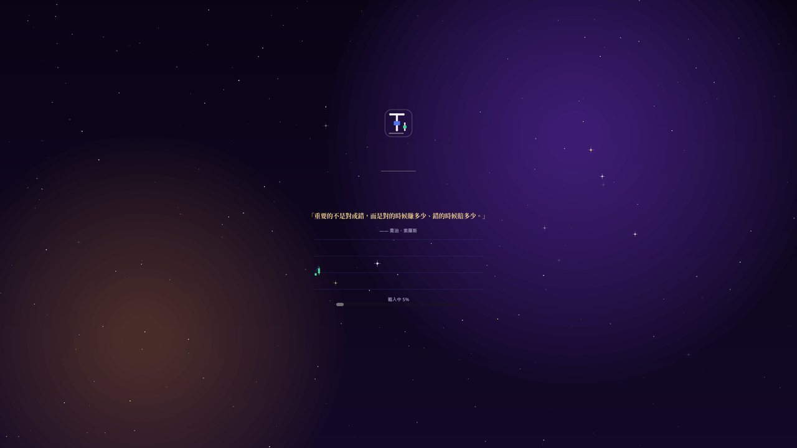
玩法
1987 黑色星期一、2000 網路泡沫、2008 金融海嘯、2020 疫情——史實日期，模擬行情。
設定部位、槓桿、停損，看風險怎麼回到你手上；還有權證與期權。
K 線自己往前走，用手上的技能卡應變：黑天鵝、軋空、央行降息……
工作、感情、家庭與傳承，每個抉擇都改變結局。
PLAYTEST・WINDOWS 64-BIT
開發中的版本，內容與平衡還會調整。下載後解壓縮，執行 OpenBell.exe 即可。Windows 若出現 SmartScreen 提示，請確認檔案來自 openbell.me 的連結。
下載 OpenBell-Playtest.zip ↓所有版本與更新紀錄 ↗ · 問題回報與合作：sofaterdion@gmail.com